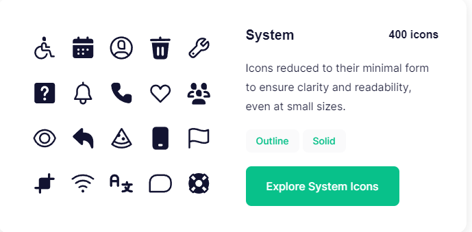

El logotipo es uno de los elementos más importantes de la identidad visual de un ayuntamiento. Debe ser reconocible, legible y transmitir los valores y la historia de Cádiz. Se puede utilizar la combinación de colores amarillo arenoso, azul y amarillo chillón en el diseño del logotipo, asegurándose de que se vea bien en diferentes tamaños y formatos.
Se usarán los iconos animados de la plantilla System, el cual trae 400 iconos por ello hay iconos para todas las situaciones posibles (con ejemplos)
Anterior
Siguiente
Arriba
Abajo
Buscar
Enviar
Filtrar
Guardar
Eliminar
Ajustes
Alerta